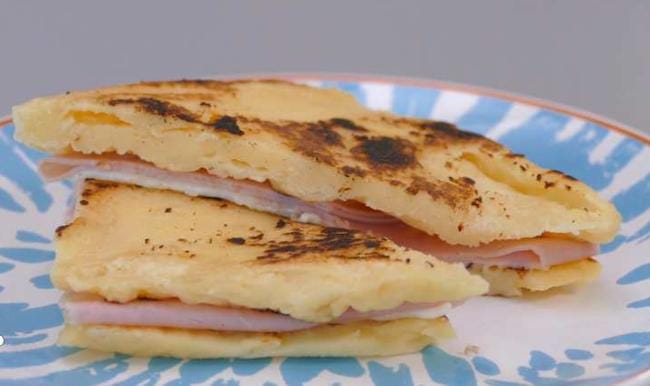
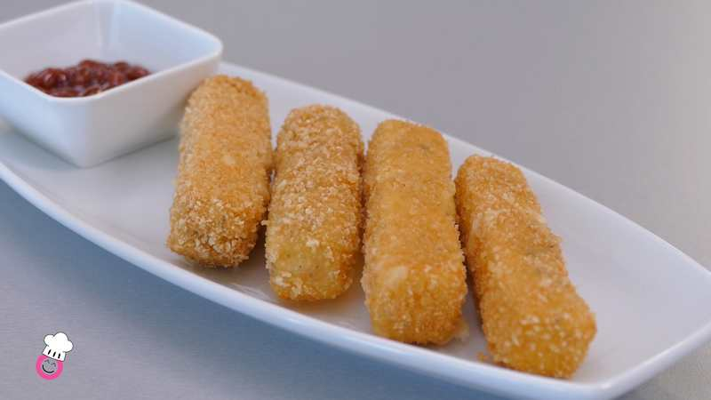
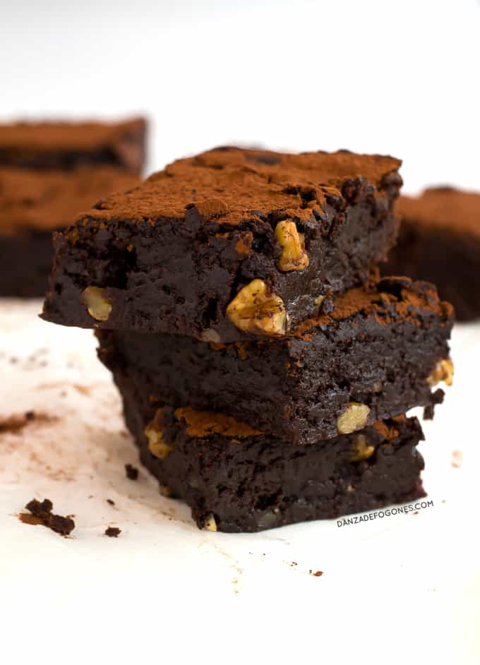

Las personas con Celiaquia tienen una reacción inmunológica al ingerir gluten, este genera una inflamación que daña el revestimiento del intestino delgado y produce complicaciones médicas.
Las siglas TACC quieren decir; trigo, avena,cebada y centeno, estos son cereales que contienen gluten y que las personas con Celiaquia deben dejar de consumir y eliminar de su dieta diaria.

Pan sin gluten
INGREDIENTES
•1 huevo
•Medio yogurt
•1 cucharada de azucar
•1 1/4 de cuchara de levadura sin gluten
•40g de harina sin gluten
VER RECETA COMPLETA

Fingers de queso
INGREDIENTES
•300gr de queso cheddar
•100gr de harina de arroz sin gluten
•sal y pimienta sin gluten
•ajo en polvo
•2 huevos
•120 gr de pan rallado sin gluten
VER RECETA COMPLETA

Brownie sin TACC
INGREDIENTES
•100g de manteca derretida
•100g de cocholate atp para celiacos
• 2 huevos
• 2 yemas
•100g de azucar
•100gr de azucar impalpable
•escencia de vainilla
•70g de harina de arroz
•60g de fecula de mandioca
VER RECETA COMPLETA